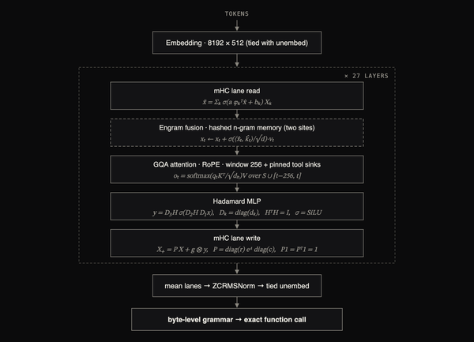
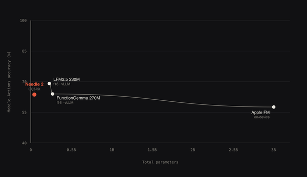

🧵
Needle 2.
CACTUS COMPUTE
工具调用
45M 参数塞进 14MB 的端侧 Agent——在海量工具里精准调用那一个，28MB 内存跑完整会话
轻触任何元素拆解 · 拖动卡片看 3D 视差
🧠
⚙️
🧮
🔍
📋
🖼 架构图
🧠 设计思路

架构

前沿对比
架构 · 前沿
引擎 · Banner
▲ 轻触放大 · 看更多
技术拆解 · 为什么能塞进 14MB
🧮
Simple Attention Net
Hadamard MLP 替代 FFN
🧠
Engram 记忆
哈希 n-gram KV 记忆
🪙
CQ2 量化
2bit 压缩，f16 的1/8
🔒
Confidence 门控
不知道就请求云端
→ 查看完整技术拆解
6.1K
GitHub ★
14MB
模型体积
45M
参数
28MB
会话内存
🧮
Simple Attention Net
Hadamard MLP 替代 FFN
🧠
Engram 记忆
哈希 KV 记忆点
🪙
CQ2 量化
2bit·f16的1/8
🔒
Confidence 门控
不知道就请教云端
Simple Attention Net
JAX 训练
CQ2 量化
LoRA 微调
多端二进制